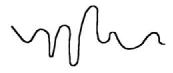

Беседа 2501 от 3877 · Беинса Дуно
Трите устоя
"Добрата молитва"
Кои бяха положенията на миналата лекция? ("Причинният свят е атмосферата, в която любовта живее.") Тия работи разбрахте ли ги? Можете ли да ги приложите? Да не станете като онзи свещеник в старо време, който ходил на една задушница и като му донесли една камара от хляб, отишъл зад нея и казал: „Виждате ли ме?" „Виждаме ви само килимявката." „Идущата година никак да не ме виждате."
Та да се увеличи вашето разбиране. Та вашата кили-мявка може ли да се изгуби? Аз взимам добрата страна на примера. Когато има малко хляб, килимявката се вижда. Колкото повече се вижда, толкова по-голяма беднотия има.
Има една опасност от едно повърхностно разбиране на нещата. Някой път ние мислим, че като вярваме в Бога, достатъчно е. Казваме: „В Бога вярвам аз." Има неща, които трябва да се приложат. С виждане ти нищо не можеш да разбереш от тях. Например водата ако не я приемеш, не можеш да утолиш жаждата си с нищо. Можеш да кажеш: жаждата и без вода може да се утоли. Водата е, която може да утоли твоята жажда. Това е в единия случай. Но пиенето на много вода има пък друга една противоположност. Препиване има, и преяждане има. Мярка трябва. Каква е мярката да знае човек колко да пие? Има мярка. Природата си има мярка. Та онова, което знаете, то е хубаво при условията, при които живеете, но понеже животът не е нещо установено, то хората са в едно подвижно положение, те са чергари, не са установени. В градовете са направени къщи, но са чергари, днес са на едно място, утре са на друго място. Така е било и с млекопитаещите. Те на едно място не могат да стоят. Десет хиляди, двайсет хиляди, сто хиляди животни на едно място не могат да стоят. Ще отъпчат мястото. Постоянно трябва да се движат от едно място на друго. Та човек в своето развитие прилича на чергарско животно. И ако не се движи, ако живее на едно място, то мястото се отъпк-ва и става нездравословно за неговото развитие. Това може да се вижда малко непонятно. Ще кажат някои: „Как да го разберем?" Има един начин за разбиране. Можете да попитате гладния: „Как мога да зная, че съм наситен вече?" Имаме няколко вида мерки. Сега ние започваме от простите мерки и отиваме към сложните. Не трябва да имате само едно просто любопитство. Можете да слушате една лекция или една песен. Не само в изпяването на песента или в изслушването на една лекция. Имате едно шише. Как ще проверите, че шишето е пълно? Ако отпушиш шишето и го обърнеш, и нищо не излиза, то е празно, и ако излиза нещо, то е пълно. Като го обърнеш с устата надолу и го изпразниш, то е празно. И как след това ще познаеш, че се е напълнило шишето? Като почне да прелива, то е пълно. И докато не прелива, то е празно. За един човек е определено колко количество храна може да приеме. Стомахът дохожда до едно състояние, че нито една хапка повече не можеш да туриш. Има някои хора, които престъпват този закон и ако туриш повече в стомаха си, той ще се намери в особено състояние. Този закон е верен не само по отношение на физическия свят. Той е верен и по отношение на чувствата на човека, по отношение на чувствения свят. Ако ти в сърцето си туриш едно желание повече, отколкото то може да носи, ти ще имаш едно противоречие. И ако туриш в ума си една мисъл повече, отколкото умът ти може да носи, ти веднага ще се намериш в същото противоречие. Някой път хората се занимават с установения живот, както го наричат хората. Няма установен живот. Например старият и младият имат един особен живот. Младият не остава в младостта си. Постоянно се изменя, расте. Изменя се начинът на неговото движение. Изменя се начинът на неговото чувс-тване, изменя се начинът на неговата мисъл. В детинство той мисли едно, в пълна възраст мисли друго, а пък на старини - пак друго. Изменя се положението му. Кое е онова, което състарява човека? Аз твърдя, че човешкото е причина за състаряването на човека. А причина за подмладяването е Божественото. Ако искаш да станеш млад, стани Божествен. Ако искаш да станеш стар, стани човек, не човек, но започни да носиш човешкото в себе си. Или другояче казано, другата мярка е: ако искаш да осирома-шееш, харчи повече, отколкото придобиваш. Ако искаш да забогатееш, харчи по-малко, отколкото придобиваш. Щом харчиш повече, ще остарееш. Някой път казваш: „Трябва да се харчи повече." Ще осиромашееш. Но казваш: „Ще взема пари отнякъде назаем." Още повече ще закъсаш. Щом вземеш пари назаем, то ти си остарял вече. Работата е свършена. Щом взимаш пари назаем, ти ще се научиш на доста големи хитрини. Тогаз онзи, който дава пари в заем, и онзи, който взема парите, ще почнат да се надхитряват. И хората, които взимат пари назаем, са придобили толкоз голяма честност, че трябва трима души гаранти да подпишат една полица, та да му дадат пари. Каква честност! В нашия век ние сме станали толкоз културни, че трима души трябва да дойдат и препоръчат някого, за да се докаже, че е честен. И ако няма тримата души да те препоръчат, не можеш да получиш. Но тримата души, които казват, че сте честен, често ги турят да платят това, което сте взели назаем. Хващат и им казват: „Понеже ти каза, че той е честен, то за възнаграждение ще платиш за него." Е добре, какво подразбират хората под думата честност? Честността, това е най-високото състояние на човешкия живот. Човек, като човек, по-благородно чувство от честността няма. Като човек, най-възвишеното нещо в човешкия живот е честността, да бъде човек честен. За онзи, който разбира речта, както аз представих горе работата, тук има една малка ирония. Щом трима гаранти са необходими за тебе, ти минаваш за един човек, който не е честен. Отиваш при едного, който иска гаранти и му искаш сто лева назаем. Той, като те погледне, не иска да ти даде, защото не те счита за честен и ще каже: „Нямам." И ще се принуди да лъже. Ако е сигурен сто на сто, ще ти даде. Той не иска да ти каже: „Няма да ги върнеш" и е принуден да те излъже, като каже: „Нямам."
Ако стане земетресение и се съборят къщите, вие започвате да мислите за какви ли грехове хората страдат. Хубаво, да кажем, че се качвате на един влак, който се кара от един инженер-машинист, но той се е понапил малко, невнимателен е и не кара с тая бързина, която е определена и която релсите могат да издържат. Но той пусне влака тъй свободно, че машината изскочи от релсите и пътниците пострадат. Кой е причината? Машинистът. Може да са причина онези, които са построили пътя, или пък машинистът. Две причини има. Ти искаш да се качиш на един влак сега. Как ще познаеш дали машинистът кара добре и дали пътят е добър? Малко работата е сложна. Животното познава. Слонът е тежък. Един слон, като си тури крака на един мост, той още като си тури крака, ще познае дали той е здрав, или не. Там където слонът не минава, не минавай, отдръпни се. Щом слонът минава, мостът е здрав. Как ще разгадаете вие? Как ще обясните? Има си причини физиологически, има причини чувствени, а има причини и от мисловия свят, с които слонът в дадения случай си служи. Та казвам, и вие можете да знаете, като се качвате на влака. Някой отива на гарата, и казва: „Днес няма да пътувам. Не съм разположен днес." И се връща дома. Казват му: „Защо си толкоз суеверен?" После пишат вестниците, че този влак излязъл от релсите. Значи у човека има едно чувство, което определя дали влакът ще излезе от релсите, или не. Например поставете вие в един кошер една изкуствена пита направена и пчелите, като влязат, веднага познават, че не са направили питите както трябва добре и започват да ги изтъняват. Как ги познават? Те нямат инструменти. Ако някой е инженер, той ще тури известни уреди, за да види дебелината каква е, а пък тая пчела няма никакъв уред, но тя веднага познава и поправя своите килийки. После вземете патката, която минава за толкоз интелигентна. Когато някой човек не е умен, казват, че има пачи ум. Но и патките са доста умни. Една патка, като й дадете царевица, глътне я веднага, а пък ако й дадете кафе или боб, още като го бутне с човката, хвърля го, не го взема. Отде да знае? От човката знае. Едното взема, а пък другото не взема. После, патката има съобразителност. Една патка води десетина патета. Не за малките патици, но за големите, за гъските говоря. Като минават патенцата, от реката наоколо излиза един голям плъх и хваща едното пате. А пък един паток го хваща горе за гърба и го носи. Плъхът държи патето в устата си, а пък патокът носи в устата си плъха и отива към реката. И като дойде при реката, патокът натиска плъха във водата. Плъхът пуска патето, но патокът не пуска плъха, туря го във водата и го вади, туря го и го вади, и няколко пъти го потопява във водата. Най-после, плъхът се обезсили съвършено и патокът го пуща, изхвърля го навън. Доста съобразителен е патокът и практичен. Трябва да потопи плъха вътре във водата и да го държи там по една-две минути. Сега вие ще кажете: „Отде да зная това и това?" Ако един паток знае как да постъпи, ако един слон знае как да постъпи, то чудно е, че хора религиозни, които много знаят, не знаят как да постъпят. Когато човек не знае и когато са развити у него личните чувства, то той, за да не покаже, че е слаборазвит, той ще покаже, че много знае. То е човешкото. Тогаз личните чувства са много развити. Или като каже, че е много набожен, то пак личните чувства се проявяват. Показва се, че или много знае, или че е много силен, или че е много богат, или че всичко може да направи. Личните чувства са тук. Тук действа човешкият елемент. Докато говориш, че всичко можеш да направиш, ти се движиш в човешкия свят. Въпрос е колко можеш да направиш. Едного го заболява корем. Идва един и го лекува. Това е действителен пример. Не мислете, че го скроявам. Един пример, който аз го зная. Станал е във варненско. Онзи, който идва, казва, че трябва да му се турят вендузи. Турят за вендуза едно голямо гърне. Турят в него кълчища и го поставят на корема. Като турят тая вендуза, целият стомах влиза в гърнето. Не може да диша човекът, вика и казва: „Умирам." И не могат да изтеглят гърнето. Един по-умен удря гърнето и го строшава. Питам сега: това ли е лекарството, вендузи, големи колкото гърне? То си има малки вендузи, малки специални чашки. Как ги турят, не зная. Вие го знаете по-добре. За голямото гърне знам как го турили, с кълчища го турили, но малките как ги турят, вие знаете. Някъде и вендузите работят за влизане на кръвта в известни области, дето тя отсъства. Там, дето има болка, има отсъствие на кръв. Например имате някъде една установена болка, в крака или ръката. Това показва, че там има по-малко кръв, отколкото трябва, и в следствие на това се заражда едно специфично състояние, което наричат болка. И ако погледнете това място, дето има по-малко кръв, винаги неговата краска се различава. Ако разгледате човешкото тяло, ще видите, че краската навсякъде не е еднаква. Някъде има посиняване. Насиняването показва, че състоянието на капилярните съдове не е естествено. А пък всичкото благосъстояние на човека зависи от хубавото състояние на капилярните съдове. Та вярата в Бога трябва да има друго отношение: за да вярваш в Бога, трябва и тялото ти да вярва, и сърцето ти трябва да вярва, и умът ти, и душата ти, и духът ти трябва да вярват в Бога. И тогаз да сте потопени и да живеете в Него. Не можеш да вярваш във въздуха, ако не си потопен във въздуха. Не можеш да вярваш в светлината, ако не си потопен в светлината, тая светлина свободно да влиза. Тогаз светлината извършва добре това, което трябва да извърши. Ти трябва да си потопен и в мисловния свят, ти трябва да си потопен и в духовния свят. Потопен трябва да бъде човек. Ако човек не е потопен, не може да живее. Има някои неща, в които човек ако е потопен, не може да живее. Рибите, които не са потопени във водата, умират. Човек е излязъл от това състояние. Човек, ако не пие вода, пак може да умре. Човек е излязъл от това състояние, да е потопен във водата. Човек няма нужда от толкоз много вода, колкото рибите. Рибите имат нужда цялото им тяло да е потопено във водата. Млекопитаещите са излезли на въздуха. У тях се приготовляват специфичните условия за умствения свят. Затова млекопитаещите са във въздуха, за да могат клетките да приготвят ония материали, с които да се строи човешкият мозък. Значи млекопитаещите са пионери за градене на човешката глава. У рибите главата е по-малка. Рибният мозък е много по-слаб. Условията на рибите са такива, че рибите не са заставени много да мислят, много благоприятни са условията във водата по отношение на храната, всичката храна е наблизо. Това са ред сравнения, които по някой път се правят за изяснение.
Някой казва: „Мен не ми трябва много знание. Поп няма да ставам." Че поповете знаят много малко. По-невежи хора от поповете няма. По-невежи хора от богословите няма. По-невежи хора от законоведците няма. По-невежи хора от лекарите няма. Какво е това знание на лекарите да лекуват? Лекуват един човек и го уморят. Проповядва, проповядва някой човек, и нищо. Там, дето има много богословски училища, там има най-големи безбожници. Много знаят. Знаят как е създаден светът. Учените хора вече с хиляди години го учат, и не го знаят, а пък богос-ловците от Библията казват, че светът е създаден в шест деня от Бога. Не стойте в това заблуждение. Мойсей писал това. Той писал по човешки, че светът е бил създаден в шест дни от Бога. Понеже в шест деня Бог създал света, затова Той е Всесилен, казват. Ако в шест деня е създаден светът, нямам нищо против това. Аз не държа за колко деня Господ е създал света. За мен е важно дали е вярно, че Бог за шест деня човешки е създал света. Аз нямам нищо против това. Онзи настоява на това, за да се видела силата Божия. Но ако не е така, защо да приписваме на Бога работи, които не е направил - да улесняваме работите. Някой проповядва за петте хляба, че Христос нахранил с пет хляба пет хиляди души, и казва: „Това не са били обикновени хлябове, но хлябове като могили." Един го слушал и подсвирнал. Казал му онзи: „Защо свириш?" „Дядо, аз не се чудя за хлябовете, че са били големи, но каква ли е била тази голяма пещ, че да побере такива големи хлябове."
Някои ясновидци казват: „Онзи свят е чудо. Ония ангели, хе-хе. И облечени хубаво, и ножовете турили така." Гледам го, този човек го скроил по човешки. И кракът му не е стъпвал в света на ангелите, и ги описва. То са човешки дубари. Никакви ангели не е видял. Казва: „Снощи видях Христа." Как Го видя? „Като някой шоп облечен, с такива гащи." И видял Бога Отец той, с дълга брада. Тогаз всички вие, които имате бради, все сте Сава-отовци. Не, не. Пазете се от неща, които са неверни. Аз не съм за критика, но ония неща, в които вярвам, да са приблизително близо до истината. Няма по-хубаво нещо от истината. Представяй винаги вярно нещата. На мен са описвали някой път така: „Видях една мома като ангел.
Но тя... красота. Много красива." Казах: „Аз много се интересувам от красотата. Можете ли да ми покажете тая мома." „Може." Аз не зная къде е видял той красотата. Една мома обикновена, с най-обикновени черти, с валчес-то лице, ония линии ги няма, малко червено лице, тънки вежди, спретната малко, но красота като на ангел я няма. Аз досега съм имам само един случай да видя красива мома. Толкоз съм ходил, в Америка съм бил, навсякъде, във варненско видях една мома, която е прочута мома, тя отговаря на красотата. Тя е чудо на света. Има красиви линии. Пластичност, изразителност, интелигентност, доброта. Отговаря на всички условия. Има си известни условия, по които се отличава красотата. Трябва да има една съразмерност между челото и брадата. Ако брадата е широка и челото широко, то тая мома не е красива. Аз не бих желал да имам разправия с една мома, която има широки челюсти. Не бих желал да имам разправия с една мома, която има брада много заострена. Това са сега мои съображения. Но ви казвам, не бих желал да имам разправия с такава мома, не бих желал такава мома да взема пари назаем от мен. Една мома, която има широка брада, ще постъпи в такъв случай по един начин, а една мома, която има тясна брада, ще постъпи по друг начин. Красивият човек пари назаем не взема. Ако му дадат, взема, но той да проси - не. Човек, който те заставя да направиш добро, той не е добър. Човек, който те заставя да му намериш пари, той не е добър. Това е моя оценка. За мен не е добър. Може да не ви се хареса това, но той не е добър. Той ще каже: „Ти ми помогни, а пък утре аз ще ти помогна." Ще ти помогне. Това са навици от миналото, от които всички трябва да се освободите. Стари навици са те. Понеже ти искаш да се повдигнеш в света, да си подобриш положението, искаш да станеш богат. Но за да станеш богат, ти ще направиш мнозина хора нещастни. Някои хора, за да станат учени, правят какво ли не. Ще правят инжекции, ще правят опити с вивисекция, за да спасяват света от някоя язва. Нямам нищо против вивисекцията, но колко животни отиват. По едно време деряха агнетата живи, живо агне ще го разрежат, да му видят сърцето. Но студентите се повдигнаха. Има други начини, по които може да се види сърцето как функционира. Сега, чрез тия невидими лъчи може да се види как функционира човешкото сърце. По-рано, за да се види как работи сърцето, са си служили с вивисекцията.
Най-първо започнете с едно учение, което се отнася до вас. Най-първо се опитайте, доколкото можете да търпите. Един обикновен пример: искаш да знаеш дали си търпелив. Някой мисли, че е търпелив. Ще ме извините. Аз само един човек съм срещал търпелив в моите изследвания. Търпеливият човек си има своите признаци и в трите свята. Това е нещо, което трябва да го придобиете. То не е само въпрос на човешката воля. Направете си един опит, за да видите дали сте търпеливи. Търпеливият човек трябва да бъде безстрашен, трябва да бъде смел. Ако не е безстрашен, той не може да бъде търпелив. Второ, този човек трябва да бъде много умен. Ако не е умен, досетлив, той не може да бъде търпелив. И най-после, този търпеливият човек трябва да бъде чрезмерно чувствителен. Някои казват, че не трябва да чувстваме. Не. Търпеливите хора са крайно чувствителни. Търпеливият човек усеща нещата, той предвижда нещата. Той усеща след двадесет години какво ще стане. И следователно той избягва ония условия, при които може да се постави. И затова е търпелив той. Ти не можеш да го изненадаш с нещо. Той е ясновидец в тоя смисъл. Казват, че човек трябва да придобие ясновид-ство. Не. Всички сте ясновидци, само че не си служите така, както трябва с него. Не притъпявайте вашите чувства. Аз съм правил своите наблюдения на варненския бряг. Ходил съм зимно време да гледам, за да видя дали усещат животните. Някой път виждат животните, някой път те четат по човешкото лице. На една птица можеш да предаваш своята мисъл. Седя аз на брега и гледам навътре в морето цяло ято от малки патици. Наблюдавам ги, правя своите опити, на тия патици проектирам една мисъл. Те не ме виждат. Аз ги наблюдавам от известно разстояние. Проектирам им една мисъл, че на брега има много ядене. Но и аз участвам като патица. Аз съм заинтересован, казвам: „Много голямо ядене има на брега." Гледам, всичките идват към там, хвъркат към там. И проектирам друга мисъл, казвам: „Скоро да бягате, че голяма опасност иде." И всички патици отиват към морето. И правя първи, втори, трети опит и виждам, че възприемат моята мисъл. Как възприемат?
Ако една патица възприема моята мисъл, то и аз мога по същия начин. Ако Бог е вложил тая дарба в една патица, то казвам, че и в мене има същата дарба, същото нещо. Често аз съм правил опити. Влизал съм в някои села. Не ми се разправя с кучета. Спра се на някоя улица, нямам разположение да мина през тая улица. Защо? Не го знам, нямам разположение. В тая улица има едно лошо куче, ще си имам работа. Има друга улица отгоре. И по нея не ми се минава. А пък към третата улица имам вече разположение. Там няма лошо куче. И като патицата схващам. Това лошо куче го схващам. Цялата местност наоколо на половин километър това лошо куче е напълнило със своята кучешка мисъл. Разбирайте.
Някой път казвате: „Аз зная." Аз опитах един ясновидец. Аз да ви кажа какъв опит направих. Той само се хвалеше, че много знае, че вижда много работи. Казах на едного: „Ще напишеш едно писмо. Едно писмо ще му изпратиш, че изпращаш нему една сума. Ще му направиш една малка дубара, но никакви пари няма да пратиш. Ще го подиграеш малко и да видим дали ще познае той кой му е пратил писмото." Онзи казва: „Аз зная кой е писал писмото." Аз нищо не казвам. Обаче той не намери кой е написал писмото. Той си мисли съвсем някой друг. Ти, ако си един психометър, ще туриш плика на челото и тогаз ще се отвори пред тебе един свят и ти ще видиш кой човек е писал. Той казва: „Аз знам кой е писал писмото." Но лицето, което посочва, не е онова, което е писало. И колко заблуждения има такива. Не искам да ви обезсърчавам. Всеки един от вас може да има ясновидство, да бъде ясновидец. Аз да ви дам един начин за ясновидство. Той е следният: искате да се опитате. Можете да си направите най-малко сто опита, за да видите колко сте ясновидец. Вие сте ясновидец като онзи персийски ходжа, когото жена му направила гадател. На случайностите не даваме голямо доверие.
Ти съсредоточаваш ума си и искаш да посетиш един свой приятел. Всички можете да направите опит. Той живее на еди-коя си улица. Може да живее на половин километър разстояние. Спри се. Ти имаш едно желание. Ти казваш: „Аз хващам неговата мисъл. Той ме вика." А пък никой не те вика. Някое съвсем друго лице вика другиго и ти си схванал. Аз съм виждал как се заблуждават някой път момите и момците. Има четири-пет моми, наредени по права линия. Момъкът, като ги види, той има предвид една от тях и се поусмихне, и всяка, като види това, казва си: „Поусмихна ми се." И понеже момите са на права линия, то всяка мома казва: „Представи си, този ме срещна и ми се усмихна." Както момата се заблуждава от момъка, тъй и момъкът се заблуждава. Наредени са четири-пет момци и момата се усмихне, но те не знаят на кого се усмихнала тя. Като се усмихне някой, виж има ли някой друг. Ако има, тогаз не знаеш на кого се усмихнал. Ако си сам, тогаз сто на сто можеш да вярваш донякъде, че на теб се е усмихнал, но и тогаз може да има изключение. Знаете ли този човек на кого се е усмихнал? Той като те види, те направи на един свой приятел, усмихне се насреща ти и после вземе сериозно лице. Казва му: „Защо ми се усмихна?" „Погледнах те и помислих, че си един мой приятел, и после видях,че не си." И при усмихването има друго нещо, което регулира нещата: не може да ти се усмихне един човек, който не те познава от миналото, не може да ти се усмихне някой, с когото нямаш кръвни или духовни връзки. Трябва да имаш кръвни връзки, трябва да имаш духовни връзки, трябва да имаш идейни връзки. И ако имаш тия три неща: кръвни връзки, духовни връзки - това са чувствени връзки в духовния свят, и мислови връзки - те са в умствения свят, ако имаш тия три връзки, този човек ще ти се усмихне. Непременно той ще те поздрави. Защото усмивката е един поздрав, израз на познанство. Онзи, който ти се усмихва, той те познава. Това е усмивка. Усмивката е най-хубавият поздрав, който може да има.
Та казвам, бих желал всички да виждате. И не така, както сега. Вие всички сте ясновидци. Ако аз туря горе на масата сто английски лири, всички ще ги видите и даже ще дойдете и ще ги преброите. Значи това зрение, което сме добили, физическото зрение, ние сме го придобили с голямата любов, която сме имали към външния свят, към предметите. Ако у нас се усили любовта към духовния свят, човек става духовен. За да се развие духовното зрение, трябва да се развие у човека чувстването. А пък трябва да се развие умът, за да се развие умственото зрение, или както го казват, съзнанието. Съзнание има на физическото поле, което се обуславя от нашето зрение. Съзнание има в духовния свят, което се обуславя от чувствата на човека. И съзнание има в мисловния свят, което се обуславя от мислите на човека. Това не е никаква привилегия. Вие трябва да бъдете духовни, за да се развие у вас вашето духовно съзнание, и ако ви бъде този свят известен, вие можете да се избавите от много неприятности, които можете да срещнете. В духовния свят има толкоз вероятности да се разболеете. Много болести на земята се дължат на физически причини, на храната, водата, въздуха, на малки микроби и пр., но много болести се дължат и на чувствата, изостанали от преди хиляди години. Тия мумии, които разкриват в Египет - много англичани платиха там с живота си. Ако един човек е вложил в един предмет едно чувство, може и преди хиляди години, ти можеш да пострадаш от този предмет. Ако буташ един гроб, ти можеш да пострадаш, ако е направено там едно заклинание. Ако минеш по една улица, дето е направено заклинание, и не вземеш мерки, можеш да пострадаш, ако бутнеш. Някой ще каже: „Как може да бъде. Чудна работа." Ако на физическото поле човек тури една бомба някъде и когато минаваш и бутнеш, няма ли да пострадаш? Ще се пукне бомбата. Как ще се отървеш? Едно лошо чувство е бомба. Една лоша човешка мисъл е бомба и може да експлодира. Дали ще пострадаш зависи от това, дали сте на близко, или далечно разстояние. Като ви говоря сега тия работи, не трябва да влезе у вас другият бръмбар: за опасностите, които съществуват. И затова всички Учители препоръчват на ония, които влизат в духовния свят, да имат Учител, който да им показва кои чувства да барат, да възприемат и кои чувства да не барат, да не възприемат, кои мисли да възприемат и кои не. Можеш да ги възприемеш, но ще платиш, за някои мисли ще платиш. Има мисли и чувства, с които по никой начин не трябва да се занимаваш. С такова непослушание можете да пострадате, хиляди години и да са минали. Дават едно поверие за рая, за онова дърво на познание на доброто и злото. Господ казал на Адама: „Предупреждавам те от това дърво да не ядеш, и в който ден ядеш, ще изгубиш свободата си, ще изгубиш всичко, каквото си придобил и ще умреш, и ще станеш един от последните, и после трябва да те избавят." Вие казвате: „Каквото Господ казва, човек трябва да го изпълни." Изпълни ли Адам това, което му казал Бог, че не трябва да яде? Сега прегрешението на мъжа е едносложно, а пък прегрешението на жената е двусложно. Как е там в Библията, както сте чели в Библията, как е? Бог на Адама ли даде заповед, или на Ева? ("На Адама, Битие, втора глава.")
Пазете се: аз не искам да говоря това, което вие мислите. Вие седите и казвате: „Учителят говори точно това, което аз мисля." Ако говоря това, което вие мислите, това не е право, нито ако вие говорите това, което аз мисля, е правият път. Трябва да се говори онова, Божественото. Не така, както аз мисля, и не както вие мислите, но както Бог мисли. Дали моята мисъл е съгласна с вашата мисъл, това не е толкоз важно. Че ако десет души се съберат и мислят да ме оберат, съгласни са в мисълта си, това права мисъл ли е? И двайсет души могат да се съберат и могат да мислят да ме оберат. И двайсет души могат да мислят да ми направят добро. Различават се. Казвам, та ни най-малко не е меродавно колко души мислят. Всяка мисъл, която нарушава равновесието на вашия умствен свят, не е права. И всяко чувство, което нарушава равновесието на вашия духовен свят, не е право. И всяка постъпка, която нарушава равновесието на вашия физически свят, не е права. За някого казват, че е лош. Аз не се произнасям така. Аз разглеждам у човека какво е неговото равновесие, какво е равновесието на неговия ум, сърце и воля и тогаз се произнасям. Имам мярка. Щом има равновесие в ума си, той е умен човек. Щом има равновесие в сърцето си, той е добър човек. Щом има равновесие в своята воля, той е добър човек на физическото поле. Те са мерки, с които трябва да се мери. И в себе си трябва да имате мерки. Вие губите своето равновесие. Някой казва: „Извинете, не можах да се сдържа." „Защо не можа да се сдържиш?" „Защото нямам равновесие." Вие сега мислите: „Каквото Господ одари човека." Че на всинца ви Господ е дал дарби вътре, и колко от тези дарби сте използвали?
Например снощи се даваше един концерт и тук някои го слушаха по радиото. Колцина от вас слушахте концерта? Имаше ли някой от вас на снощния концерт на италианеца? ("Слушахме го по радиото."} Радиото ни най-малко не може да представи какъв е концертът. (И Учителят е слушал този концерт по радиото от Изгрева.} Тонът с десет пъти беше намален от онзи тон, с който италианецът свиреше на публиката. Аз бих турил на радиото бележка единица. Все едно, че по радиото слушаш обикновена цигулка, когато свири, а пък ако слушаш цигулката на мястото, тонът има известна мекота, която по радиото не може да се предаде. И аз снощи, като слушах по радиото, трябваше да пречиствам тона и едновременно слушах и тук, и там, и правех разлика. И казвам: каква грамадна разлика има между радиото и това, което схващаме непосредствено.
Сега дошъл тука един голям хиромантист. Някои са ходили при него. Един, който ходил, ми разправи това: учудило го, че онзи му казал много неща. Три години следвал в Индия и знаел много добре хиромантия, не като нашите хиромантисти. Всичко му разправил за майка му, за него и пр. Всичко му разправил по знаците на ръката, но имало някои неща, които не могъл да познае. Казвам му: „Кога ходи при него?" „След обед." Казах му: „Иди при него преди обед, защото при всеки гадател не върви мисълта след обед. Иди преди обед и да си първият при него." Някой път не върви мисълта. Някой път и вие сте гадатели. Някои от вас гадаете: хваща ръката и се поусмихне, уж че знае нещо, а пък нищо не знае. Това не е наука. Така и аз зная. Аз зная да гадая на всичко: на боб, на всичко зная. Има специфични малки линии. Това е една подробност, която показва степента на развитието на ума и на човешкото сърце. Най-първо, аз като разглеждам една ръка, не ме интересуват подробностите, те са второстепенни работи. Най-първо гледам има ли една основна мярка на сърцето, на ума, на волята и на живота му. След това има други линии, които са турени паралелно. Например свири някой. Той като свири, аз мога да начертая една музикална линия, която изразява неговото свирене. Тук имате начертана една музикална линия.
И аз мога да ви изсвиря тая линия на цигулката. Или вие можете да изпеете песента „Духът Божи". Тая песен си има известни линии. Мога да ви дам линии за това. Дойде в музиката едно грандиозно чувство. То е една изпъкнала линия. Дойде едно тъжно чувство. Тогаз линията е вдлъбната. Или дойде някое съвсем голямо противоречие: то са пречупени линии. После има и прави линии. Когато се свирят известни музикални пиеси, има хора, които ще ги нарисуват с линии, с краски. Ако някой музикант ми изсвири една легенда за някоя мома, то аз мога да нарисувам момата: ще нарисувам очите й, сини или черни, после ще й нарисувам определено чело и цялото й тяло, ако музиката е правилна, ще нарисувам.

Ти ще вярваш в ангела, който Бог ти е турил. И като станеш сутринта, помисли за неговия ум. Той е един светъл ангел. Светъл ум имат ангелите. Те са много благородни в ума. И какво сърце имат ангелите, на доброта. И волята им каква е благородна. И като станеш сутринта, помисли за своя ангел. Вие, като станете сутринта, колко души от вас мислите за вашия ангел? После мислете за Бога, за Христа. Аз съм слушал проповедници как мислят за Христа и се чудя как е произлязло тяхното верую. Че Христос имаше устой, велик устой, умствен устой, устой в Своите чувства и устой в Своята воля. Целта Му не беше да се прослави в света, имаше една велика мисъл в ума Му, да раздаде едно благо на цялото човечество, с едно чувство да подобри положението на човечеството, с една воля да услужи на когото и да е, който има нужда и който може да използва. Вие си представяте сега страдащия Христос. Че кой е страдащият Христос? Страдащият Христос е, когато Той ти показва пътя, и ти не искаш да Го следваш. Той те погледне и казва: „Знаеш ли какви ще бъдат резултатите от това? Знаеш ли какви ще бъдат резултатите на този път, по който си тръгнал? Знаеш ли какви ще бъдат резултатите на този духовния път, по който си тръгнал?" Има неща, които трябва да знаете. Не можеш да помогнеш на един човек, който няма вяра в тебе. Помнете това. Никога хората не могат да имат отношение към мене, ако не вярват. И никога не можете да помогнете на един човек, в когото не вярвате. Аз съм правил много опити. Аз съм срещал хора много лоши. Ако туря вяра в тях, те са много разположени. Правил съм и други опити. Срещна хора добри. Като туря мисълта си, че не вярвам в тях, те стават лоши, държат се малко особено. Не че този човек е лош, но от мен зависи. Казвам, този човек е добър, но той се държи студено, понеже моята мисъл не е права. Аз нямам вяра, нямам устой. Аз имам за него съвсем низко разбиране, съвсем долно мнение. Имал съм няколко случая: като събудиш в него онова Божественото, той те погледне и ще каже: „Слава Богу, че намерих един човек, който има вяра в мен." Аз като правих своите изследвания, за да се избавя от любопитството на някои хора, съм постъпвал така. Някой ми казва: „Я ми кажете моите недъзи." Казвам му: „Ти знаеш своите недъзи, грешки, престъпления повече, отколкото аз. За тях не ме питайте. Аз съм дошъл да правя своите изследвания, за да намеря нещо добро у вас, и като намеря доброто, ще ви го кажа, а пък какво лошо имате, там ще мълча като риба. Там не съм авторитет." И на вас препоръчвам същото правило: изучавайте най-първо доброто, което е в човека и после вие лесно ще намерите ония отклонения. Лошото в човека е път, по който човек се е отклонил от доброто. Много мъчно е човек да разсъждава правилно.
От това, което дотук съм ви говорил днес, какво резюме можете да направите, какво заключение можете да извадите? Никакво заключение почти. Има поговорка: „Много думи на воденицата."
Запомнете правилото: не си търпелив, ако нямаш устой в ума си. Да не те смущават външните отношения във физическия свят. Да знаеш, че всичко в света е разумно. Ти казваш: „Как ще прекарам живота си?" Много добре ще го прекараш. Във физическия свят много добре ще го прекараш. В духовния свят много добре ще го прекараш. В умствения свят много добре е го прекараш. Устой ако имаме, много добре ще прекараме. Защо е така? Защото Бог е направил така света. Понеже Бог има всичките устои в Себе Си и понеже аз живея в един свят на устои, и понеже аз вярвам в Бога, но то не е сляпа вяра, не е празна вяра, не е само вяра в думи, но вярвам в устоите на Бога, вярвам в Неговата любов, мъдрост и истина, не може да се случи друго нещо с мене. Ти ще кажеш: „Каша е светът." Нищо не значи за мене това. Кашата си е каша. Като има много кал, и птица ставам, турям си крила, и като изсъхне пътят, пак слизам долу. Като вляза във водата, плавам. Ще си направите един аероплан. И аз си правя аеропланите много лесно. За половин час турям едно малко чердже. Но черджето много заблуждава. Вие правили ли сте опит? Вие казвате, че сте много силен. Вие искате да се концентрирате, искате някой път да прилагате източните методи. Най-първо трябва да се научите на закона да се освобождавате от влиянието на земята. Мисълта ви да бъде толкоз силна, че като мислите за Небето, за духовния свят, както седиш в стаята си, поне на четири пръста да се повдигнеш от земята, че краката ти да не се опират на пода. Докато ти поне с един пръст не се вдигнеш, то концентрацията ти е обикновена. И даже ако се вдигнеш на един милиметър, то е вече концентриране. Правили ли сте опити? Има ли някой от вас, който се е вдигнал на един милиметър. Моите сведения са, аз зная сто и едно на сто, че нито един от вас на един милиметър не се е вдигнал. И ако някой иска, нека да ме опровергае. Бих желал да опровергаете. Аз съм ясновидец и вечерта ви наблюдавам, колко се вдигате. Всяка вечер ви меря краката, дали са вдигнати. Не ви съдя. Някой път аз се смея и казвам: „По-добре, защото ако рекат да се вдигнат, ще заминат от света, ще отидат преждевременно в другия свят."
Но все така имате един прогрес.
Спрете се на основните неща в лекцията. Другото е закуска.
Устой в мисълта. Не се смущавайте за бъдещето.
Устой в чувствата. Не се тревожете за настоящето.
Устой във волята. Не се тревожете за миналото.
Не се тревожете за миналото, не се тревожете за настоящето и не се тревожете за бъдещето. Бъдещето е в умствения свят, настоящето е в духовния свят, а пък миналото е физическият свят. Не се тревожете нито за миналото, нито за настоящето, нито за бъдещето.
Гледайте с ония светлите мисли, Божествените мисли. Хванете Божествената мисъл. Хванете мисълта, с която ангелите живеят и с нея живейте.
Сега ще спрем дотук. Ще продължим малко идущия път лекцията.
"Бог е Дух и Божият Дух носи свободата." (три пъти}
6 ч. 25 мин.
27 лекция на Общия окултен клас 25 март 1936 г., сряда, 5 ч. сутринта София, Изгрев
Небето чисто, звездно.
Времето тихо и меко.